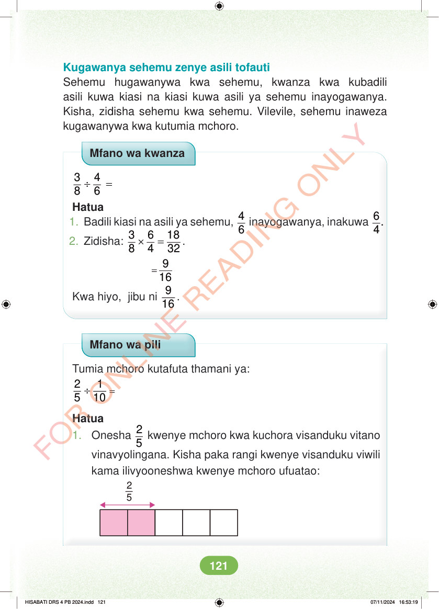

<!DOCTYPE html>
<html lang="sw-TZ"><head><meta charset="utf-8"><meta name="viewport" content="width=device-width,initial-scale=1">
<title>Hisabati: Kitabu cha Mwanafunzi Darasa la Nne</title>
<meta name="title-id" content="pg127_sec001"><meta name="page-section-id" content="133">
<link href="./content/tailwind_output.css" rel="stylesheet"><link href="./assets/libs/fontawesome/css/all.min.css" rel="stylesheet"><link href="./assets/fonts.css" rel="stylesheet">
<style>body{margin:0;background:#eef1ed}main{width:100%;display:flex;justify-content:center;padding:1rem 1rem 5rem;box-sizing:border-box}#content{width:100%;display:flex;justify-content:center}.pdf-page{position:relative;width:min(calc(100vw - 2rem),56rem);aspect-ratio:540.8980102539062/750.6610107421875;background:white;box-shadow:0 4px 24px #0002;overflow:hidden}.pdf-page img{position:absolute;inset:0;width:100%;height:100%;object-fit:fill}</style>
</head><body><main><h1 class="sr-only" id="page-heading">Ukurasa wa 127</h1><div id="content" class="opacity-0"><section role="article" data-section-type="pdf_accessible_page" data-section-id="pg127_sec001" aria-labelledby="page-heading" class="pdf-page"><p class="sr-only" data-id="pg127_gp001_tx001">Kugawanya sehemu zenye asili tofauti Sehemu hugawanywa kwa sehemu, kwanza kwa kubadili asili kuwa kiasi na kiasi kuwa asili ya sehemu inayogawanya. Kisha, zidisha sehemu kwa sehemu. Vilevile, sehemu inaweza kugawanywa kwa kutumia mchoro. Mfano wa kwanza ÷ = 3 4 8 6 Hatua 1. Badili kiasi na asili ya sehemu, 4 6 inayogawanya, inakuwa 6. 4 2. Zidisha: × = 3 6 18 8 4 32 . = 9 Kwa hiyo, jibu ni 9 16 . Mfano wa pili Tumia mchoro kutafuta thamani ya: = ÷ 2 1 5 10 Hatua 1. Onesha 2 5 kwenye mchoro kwa kuchora visanduku vitano vinavyolingana. Kisha paka rangi kwenye visanduku viwili kama ilivyooneshwa kwenye mchoro ufuatao: 2 5 HISABATI DRS 4 PB 2024.indd 121 HISABATI DRS 4 PB 2024.indd 121 07/11/2024 16:53:19 07/11/2024 16:53:19</p></section></div></main><div class="relative z-50" id="interface-container"></div><div class="relative z-50" id="nav-container"></div><script src="./assets/offline-preloader.js"></script><script src="./assets/scorm.js"></script><script src="./assets/base.bundle.local.js"></script></body></html>